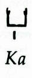
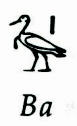
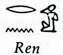
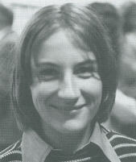

|
According to tradition, shamans are individuals who, by definition, have overcome the common perceptual mindset of space-time conditioning. Space for them no longer exists. It is sufficient for them to intensify the sharpness of their interior sight and the intensity of their interior light to be able to penetrate everything. We read in traditional texts and in reports of scholars that shamans bilocate themselves, that they move in space, can go far and return in an instant, that they are clairvoyant, besides being therapists and magicians. Certain shamanistic conceptions suggest that our past thoughts and our mind have never left our body, for the simple fact that they have always been outside our body and our brain. They do not need to emerge from inside, because they have never been inside. The shamanistic initiation makes the trainee simply aware that mind and consciousness are outside and above, and they have always been so. The initiation practices reawaken a corresponding state of consciousness, that gives the living awareness of this vision. The shamanistic conceptions and the converging descriptions of out of body experiences coincide with the notion that mind and consciousness are a prius in respect of the brain and the body -- in other words, that brain and body evolve out of consciousness. Astral projection is one of the most salient features of the mystical tradition underlying most of the major religions. In fact, anthropologists have found that OBE beliefs appear in about 95 percent of the world's cultures. The idea that consciousness can function independently of and outside of the physical body is found in Egyptian manuscripts that delve in detail into the nature of the ka, or double that can separate from the physical body and travel at will.  The ba is the principle of life that dwells in the ka, much like the heart of the physical body.  The khu is the radiance of the being in
eternal life, and sekhem is the form through which a person exists in heaven.
In addition there is the ren or spiritual name of a being.  Allusions to astral projection are particularly prominent in the scripts of Tantric Buddhism, a subdivision of Mahayana Buddhism found in Tibet and parts of Mongolia. Such experiences are considered to be a mark of his devotion to the Buddha. Pure Land Buddhism in China is a tradition which not only admits to NDEs, but is philosophically grounded upon their reality and accessibility to all people. The particular notion of astral projection can be traced back to Pythagoras' claim to hear the music of the heavens. The Pythagoreans assumed that the distances of the heavenly bodies from the earth somehow corresponded to musical intervals. By allowing one's consciousness, uplifted by philosophy, to rise through these astral spheres one ultimately might attain to union with the divine. Subsequently such terms as astral projection and out-of-body experience have come to be applied to a wide variety of visionary, mystical and psychic experiences. For examples, the experience developed in the mystery traditions which enabled participants to lose their fear of death might be viewed in this way. St. Augustine's visionary experience, described earlier, is another possible instance. Dante Allegheiri epitomizes the artistic evolution that signalled the end of the middle ages and the rise of the Italian Renaissance. His descriptions in the Divine Comedy of his own visions into the worlds of hell, purgatory, and paradise enjoy a paramount position in Western poetry. Yet there is a striking similarity in his work to the understanding of the afterworld one finds earlier in Egypt, Tibet, and Plato, as well as later in the visions of Emmanuel Swedenborg. Dante's familiarity with several systems of medieval mysticism leads us to believe he used dream and reverie states as an inspirational source for his artwork: At the hour near morning when the swallow begins her plaintive songs, in remembrance, perhaps, of her ancient woes, and when our mind, more a pilgrim from the flesh and less held by thoughts, is in its visions almost prophetic, I seemed to see in a dream an eagle poised in the sky, with feathers of gold, with open wings and prepared to swoop. And I seemed to be in the place where his own people were left behind by Ganymede when he was caught up to the supreme conclave...Broadly speaking, we can define an astral projection, bilocation or out-of-body experience (OBE) as the sensation of observing phenomena from a perspective that does not coincide with the physical body. Often one will experience consciousness being transferred from the physical body to another "astral body," "second body," "etheric body," "double," or "doppelganger." On other occasions, one may experience oneself as a mere point of awareness outside of the physical body. There seem to be several distinct, but related, types of experience lumped together un`er the general rubric of out-of-body experience. These include (1) lucid dreams where one seems to be conscious within a dream world, (2) clairvoyant awareness of distant locations, (3) the actual sensation of separation from one's physical body, floating above it, and looking down upon the physical form, (4) travelling outside of one's body to different locations in physical time and space, and (5) gliding and flying through the various supersensible "astral" and spiritual planes. Thousands of OBEs have been reported by
individuals of all ages and from all walks of life. Such experiences have
played a major role in the shamanistic rites and esoteric schools of many
previous cultures. Much occult literature abounds in unsubstantiated claims
regarding the vast scientific and historical knowledge that can be imparted
to visitors upon the "higher planes." Some of this literature is actually
quite valuable because of the systematic explorations conducted by philosophically
trained clairvoyants. This body of literature seems to put the OBE into
a larger perspective.
Ramacharaka's Theosophical Perspective A typical description of astral travelling, from the "occult" viewpoint is provided by Yogi Ramacharaka: It is possible for a person to project his astral body, or travel in his astral body, to any point within the limits of the earth's attraction, and the trained occultist may do so at will, under the proper conditions. Others may occasionally take such trips (without knowing just how they do it, and having afterwards, the remembrance of a particular and very vivid dream); in fact many of us do take such trips, when the physical body is wrapped in sleep, and one often gains much information in this way, upon subjects in which he is interested, by holding astral communication with others interested in the same subject, all unconsciously of course. The conscious acquirement of knowledge in this way, is possible only to those who have progressed quite a way along the path of attainment. The trained occultist merely places himself in the proper mental condition, and then wishes himself at some particular place, and his astral travels there with the rapidity of light, or even more rapidly. The untrained occultist, of course, has no such degree of control over his astral body and is more or less clumsy in his management of it. The Astral Body is always connected with the physical body (during the life of the latter) by a thin silk-like, astral thread, which maintains the communication between the two. Were this cord to he severed the physical body would die, as the connection of the soul with it would be terminated....This description bears at least some resemblance to other accounts from such diverse sources as the Egyptian Book of the Dead, the Tibetan Book of the Dead, Plato's description of Er, Dante's Divine Comedy, and Swedenborg. Although the social climate in our culture is arriving at a point where it will soon be more prevalent, so far there have been few spiritual visionaries who felt that working with scientists would be a beneficial use of their time. Similarly very few scientists are interested in working with visionaries. Thus, science has currently little to say about such experiences. An Accidental Projection Apparently not everyone who leaves their body is able to travel to the Empyrean heights (if they exist). Many individuals who have been spontaneously thrust outside of their bodies, or who have cultivated the ability to have OBEs at will, have sought a scientific confirmation and understanding of their experiences. These projections often result from hypnosis, anesthesia, drugs, stress, or accidents. A typical accidental projection, occurred to a seventy year old Wisconsin man: He had hitched his team, one wintry day, and gone into the country after a load of firewood. On his return, he was sitting atop the loaded sleigh. A light snow was falling. Without warning, a hunter (who happened to be near the road) discharged his gun at a rabbit. The horses jumped, jerking the sleigh and throwing the driver to the ground head-first.
Projections frequently occur in dreams. A classic example of a dream OBE, was reported in 1863 by Mr. Wilmot of Bridgeport, Connecticut: I sailed from Liverpool for New York, on the steamer City of Limerick....On the evening of the second day out,...a severe storm began which lasted for nine days....Upon the night of the eighth day,...for the first time I enjoyed refreshing sleep. Toward morning I dreamed that I saw my wife, whom I had left in the U.S., come to the door of the stateroom, clad in her night dress. At the door she seemed to discover that I was not the only occupant in the room, hesitated a little, then advanced to my side, stooped down and kissed me, and quietly withdrew.Astral projection is so often associated with dreaming that many writers insist the astral body normally separates from the physical during sleep. Most of us, this theory posits, are not sensitive to the separation and only maintain a vague memory of the experience as a dream. Conscious Astral Projection Many techniques for conscious astral projection involve regaining consciousness within the dream state. I would suggest however you not engage in such practice if you often experience great discord within yourself. Sylvan Muldoon's Method One technique is offered by Sylvan Muldoon in his book The Projection of The Astral Body: 1. Develop yourself so that you are enabled to hold consciousness up to the very moment of "rising to sleep." The best way to do this is to hold some member of the physical body in such a position that it will not be at rest, but will be inclined to fall as you enter sleep.Muldoon's book, first published in 1929, offers a wealth of information based on the hundreds of out-of-body experiences he had over a period of many years. However, Muldoon's experiences were seldom completely conscious, and never beyond the limits of the immediate earth environment. In one "superconscious" experience, after a lonely evening, he found himself in a strange house, watching a young lady, who happened to be sewing at the time. Six weeks later, he chanced to recognize this woman on the streets of the small Wisconsin town where he lived. Upon his approaching her, she was startled to discover he was able to accurately describe the inside of her home. She eventually became a very close friend of his and participated with him in a number of projection experiments. By systematically observing his own condition in the out-of-body state, Muldoon was able to derive some very interesting hypotheses. For example, he made numerous measurements of the "silver cord" connecting the astral and the physical bodies, stating that it varied in thickness from about 1 1/2 inches to about the size of a sewing thread according to the proximity of the astral body to the physical. Muldoon does not tell us how these measurements were made. Presumably they are simply estimates of some sort. At a distance of from eight to fifteen feet, the cord reached its minimum width. It was only after this occurred that Muldoon was able to exercise complete control over his astral body. He also noticed that the impulses for the heartbeat and breath seemed to travel from the astral through the cord to the physical body. I have tried the experiment many times of holding the breath, while consciously projected, and within cord-activity range. The instant that it is suspended the before-mentioned action of slight expansion and contraction ceases, in the psychic cable, as it likewise does in the physical body; but while the respiration ceases the regular pulsating action [the heartbeat] continues. A deep breath in the astral will produce an identical breath in the physical; a short one will produce a short one; a quick one will produce a quick one, etc. Muldoon also observed that physical debilities and morbid physical conditions seemed to provide an incentive for projection. He himself was quite frail and sickly during the years when his experiences were most pronounced. It was his hypothesis that the unconscious will -- motivated by desires, necessities, or habits that would otherwise have resulted in somnambulism or sleep walking -- led to astral projection for him because of the debility of his body. When he was thirsty at night, for instance, he might find his astral body travelling to the pump for water. On one occasion it occurred to Muldoon that his heart was beating rather slowly. He went to a doctor who told him his pulse was only 42 beats �r minute and gave him a cardiac stimulant -- strychnine -- to correct the condition. For the next two months Muldoon took this stimulant, and during this period he was not able to induce a projection -- although during the previous year he had been averaging at least one OBE each week. After he discontinued the medication, he was again able to astral project. He also noticed that if he experienced intense emotions while out of his body, it tended to cause his heart to beat faster. This resulted in his being suddenly "interiorized" again, often against his conscious will. Such sudden interiorization often resulted in painful, sometimes cataleptic, repercussions within the body. As his health improved, Muldoon's abilities
waned and practically disappeared. Eventually he lost all interest in astral
projection-after having made the most significant contribution of his time.
Since then several other individuals have contributed extensive reports
of their own out-of-body experiences.,
Robert Monroe's Method Robert A. Monroe, the author of Journeys Out of the Body, describes how he visited several medical doctors looking for an explanation of his condition. They could find nothing wrong with him. In fact, Monroe is an excellent example of an individual whose reported experiences could not easily be attributed to defective mental or emotional functioning. A former vice-president of Mutual Broadcasting Corporation, Monroe is now president of two corporations active in cable-vision and electronics. He has produced over 600 television programs. During the years of his reported OBEs, Monroe has continued to lead an active business and a rewarding family life. His book documents many dimensions of OBE activity. In what he termed "Locale I" and "Locale II" are found the common experiences of the occult literature-floating outside of one's body within the familiar physical environment and then travelling to the "astral" worlds of heaven and hell complete with spirits and thoughtforms. In "Locale III" Monroe describes his visits to a plane rather parallel to our own. Human beings there lived much as we do, with some rather odd exceptions. They had no electricity or internal combustion motors, yet a rather sophisticated technology was built around a sort of steam power. Their automobiles held a single bench seat large enough for five or six people abreast. Monroe is currently engaged in a very sophisticated
program of training scientists and others to participate in out-of-body
experiences.
Robert Crookall's Observations While personal accounts of this sort are invaluable, they do little to satisfy the scientific need for information that has no possibility of subjective distortion or falsification. A small, but important, step in this direction has been made by the eminent British geologist, Dr. Robert Crookall. Struck by the many independent reports of OBE, Crookall attempted a critical analysis of the data from as many sources as he could possibly collect. By looking at this collection from different perspectives, he was able to discover a number of interesting, and previously undetected, patterns of out-of-body experience. In his first analysis, Crookall revealed a basic OBE pattern which was scattered among hundreds of cases from many different cultures: The replica body is "born" from the physical body and takes a position above it. At the moment of separation, there is generally a blackout of consciousness"much as the changing of gears in a car causes a momentary break in the transmission of power." Commonly the vacated physical body is seen from the released "double." Sometimes the "silver cord" would be noticed. The experience is generally not frightening. Many different phenomena are viewed after separation and the return of the double follows a reversal of the pattern just indicated. Rapid re-entry can cause shock to the physical body. In a second analysis, all cases were broken down into two large groupings. One group contained projections resulting naturally and gradually -- from illness, exhaustion or sleep. The other included forcible and sudden projections caused by accidents, anesthetics, suffocation, or willful projection. Crookall reports that people who left their bodies in a natural manner enjoyed consciousness of a clear and extensive type-with telepathy. While the consciousness of the forcibly ejected was remarkably restricted and dim, with dreamlike elements. Those who left naturally tended to glimpse bright and peaceful conditions. The forcibly ejected, if not on earth, tended to be in the confused, and semi-dreamlike conditions corresponding to the "Hades" of the ancients. The former met many helpers (including dead friends and relatives), the latter sometimes encountered discarnate would-be hinderers. A third analysis compared the differences in experiences reported by ordinary people with those of individuals who claim to be psychics. By and large, the psychics reported experiences very much like enforced projections, whereas the non-psychics had experiences of natural projection. He also noted that the psychic and mediumistic people commonly observed a mist or vapor leaving their bodies and forming part of the double. Similar statements are often made by those who observe the permanent release of the double during the process of death. This suggested to Crookall that the double
actually comprised a semi-physical aspect called the vital or etheric body
as well as an astral or super-physical Soul Body. If after the projection,
the semi-physical body is still attached, the double will be able to move
physical objects, cause rappings, etc. However, if the projection occurs
in two stages, so that the Soul Body is separate from the vital body, then
the Soul Body is free to travel to the higher "paradise" realms. This second
stage would be equivalent to discarding the "astral shell" in Ramacharaka's
account. In his most recent work, Crookall documents many cases in which
the projection experience occurs in two stages.
Contemporary Perspectives About OBEs In a survey of experimental psi research literature, Carlos Alvarado determined that -- in spite of occasional striking results -- the evidence for ESP occurrence, as well as for the possible ESP-conducive properties of the OBE, is considered to be weak. Alvarado also noted that since 1980, the psychological community has been giving increasing attention to the out-of-body experience characterized by surveys of spontaneous OBEs studying psychological and other correlates and aspects of the experience. Psychologists have been able to find very few factors that reliably correlate with the OBE experience in terms of age, sex or religious orientation. However, psychological variables such as absorption, fantasy proneness, locus of control, lucid dreams, dream recall and others, indicate the importance of internal cognitive processes related to the OBE because of the positive relationship with the experience. For example, in a survey of 321 people by British psychologist Susan Blackmore, twelve percent reported out of body experiences.  Susan Blackmore Most OBEs occurred when resting but not asleep and lasted one to five minutes. Many details of the OBEs were obtained -- the most significant finding being that OBErs were highly likely to report lucid dreams, flying dreams, hallucinations, body image distortions, psychic experiences and beliefs, and mystical experiences. Research into the out-of-body experience is at an extremely primitive state. The experience itself has yet to be adequately defined. When groups are asked if they have had an out-of-body experience, the percentage of Yes answers varies so widely that it demands an explanation. Gertrude Schmeidler, a psi researcher emeritus from the City College of New York, reports that 12 surveys show a range of Yes answers between 4% and 98% when people are asked whether or not they have had an OBE. This analysis indicates that the differences do not depend on the wording of the question or the explanation of it. Perhaps differences in prior exposure to direct suggestion -- or to cultural conditioning -- can account for such enormous extremes in the groups' reports of OBEs. A unique perspective on out-of-body experience has been developed by the Jungian analyst Arnold Mindell and his concept of the "dreambody." He views the dreambody as a multi-channeled information center which communicates a message concerning one's life process through dreams, via pain, verbally, by auditory channels, and in body symptoms, and movements. In order to achieve and increase awareness of the patient's life tendency, Mindell advocates amplifying not only dreams but body symptoms. Mindell observes that dreambody awareness increases most dramatically near death. He says tha near death, dying people experience their dream bodies as clairvoyant or lucid dreams. They feel they can go places and often actually hear, see, and feel what is going on at a distance even though their real bodies still lie in bed. He suggests that their dreambody is almost free to do the impossible because their proprioception no longer relates to the pressures, pains, and agonies of their physical body. The dreambody appears to transcend the real body. It is a form of awareness that is independent of the living body. He suggests that death may be the last edge, the one at which we truly begin to live as we are. Some out-of-body experiencers describe the sensation of possessing and, in some instances, simultaneously occupying a multiple number of "bodies" at varying locations, sometimes in conjunction with the sense of being disembodied. A variant of this experience, during which subjects seem to shift awareness alternately between two or more locations. Researchers tend to think that, if the phenomenology of this experience is to be taken at face value, it could possible be modelled by a hyperdimensional view of consciousness (such as is presented in the Appendix). Interesting confirmation of the need for a hyperdimensional model comes from J. H. M. Whiteman, a South African mathematician and physicist who has written extensively on his own out-of-body experiences. He maintains that that models of OBE, purporting to explain the evidence in terms of conventional psychological, psychiatric, or physical theories, are premature and incomplete. Whiteman feels that they seriously misconceive the states in question. He suggests that little if any real progress in understanding OBEs can be expected in the so long as one-space theories govern research in the subject. Perhaps the most interesting question posed
with regard to out-of-body experience is that suggested by British psychologist
Susan Blackmore, who asks how "the human information processing system
construct[s] the illusion of a separate self in the first place."
References . Sergio Bernardi, "Shamanism and Parapsychology." In Betty Shapin & Lisette Coly (eds.), Parapsychology, Philosophy and Religious Concepts. New York: Parapsychology Foundation, 1987, pp. 41-54. . Dean Sheils, "A Cross-Cultural Study of Beliefs in Out-Of-The-Body Experiences, Waking and Sleeping," Journal of the Society for Psychical Research, 49(775), March 1978, 697-741. . E. A. Wallis Budge, The Egyptian Book of the Dead. New York: Dover, 1967, lviii-lxx. . D. Scott Rogo, "Astral projection in Tibetan Buddhist literature," International Journal of Parapsychology, 10(3), August 1968, 277-284. . Carl B. Becker, "The Centrality of Near-Death Experiences in Chinese Pure Land Buddhism," Anabiosis: The Journal for Near-Death Studies, 1(2), December 1981, 154-171. . Ganymede was a Trojan boy of great beauty who was caught up by love's eagle and made a cupbearer to the gods. . Dante Alighieri, Purgatorio, trans. by John D. Sinclair. New York: Oxford University Press, 1968. Canto ix. . Apparently Ramacharaka is neglecting the extra-terrestrial possibilities here. . Yogi Ramacharaka, Yogi Philosophy and Oriental Occultism. Chicago: Yogi Publication Society, 1931, pp. 192-199. . Sylvan Muldoon & Hereward Carrington, The Projection of the Astral Body. New York: Samuel Weiser, 1970, pp. 61-2. Originally published in 1929, as a collaborative effort between an excellent researcher and an unusual psychic, this book remains a standard reference in the OBE literature. . Frederick Myers, Human Personality and Its Survival of Bodily Death, Vol. I, New York: Longmans, Green, 1954, p. 682 ff. . Muldoon & Carrington, op. cit., 164. . Ibid., 80. . Oliver Fox, Astral Projection. New Hyde Park, New York: University Books, 1962. . Roy AId, The Man Who Took Trips. New York: Delacorte, 1971. . Robert Monroe, Journeys Out of the Body. New York: Doubleday, 1971. The book contains a preface by Charles Tart describing research with Monroe. . Robert Crookall, The Study and Practice of Astral Projection. New York: University Books, 1966. . Robert Crookall, Out-of-the-Body Experiences. New York: University Books, 1970, pp. 1-5. . Ibid. . Carlos S. Alvarado, "ESP During Out-Of-Body Experiences: A Review of Experimental Studies," Journal of Parapsychology, 46(3), September 1982, 209-230. . Carlos S. Alvarado, "Research on Spontaneous Out-Of-Body Experiences: A Review of Modern Developments, 1960-1984," in Betty Shapin & Lisette Coly (eds.), Current Trends in Psi Research. New York: Parapsychology Foundation, 1986, pp. 140-174. . Susan J. Blackmore, "A Postal Survey of OBEs and Other Experiences," Journal of the Society for Psychical Research, 52(796), February 1984, 225-244. . Gertrude R. Schmeidler, "Interpreting Reports of Out-Of-Body Experiences," Journal of the Society for Psychical Research, 52(794), June 1983, 102-104. . Arnold Mindell, Working with the Dreaming Body. Boston: Routledge & Kegan Paul, 1985. . F. Gordon Greene, "Multiple Mind/Body Perspectives and The Out-Of-Body Experience," Anabiosis: The Journal for Near-Death Studies, 3(1), June 1983, 39-62. . J. H. M. Whiteman, "Whiteman Replies to Chari," Parapsychological Journal of South Africa, 4(2), December 1983, 144-149. . Susan Blackmore, "The Aspirations of Psychical Research," in D. H. Weiner & R. L. Morris (eds.), Research in Parapsychology 1987. Metuchen, NJ: Scarecrow Press, 1988, pp. 135-139. |